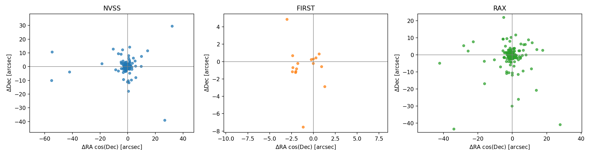
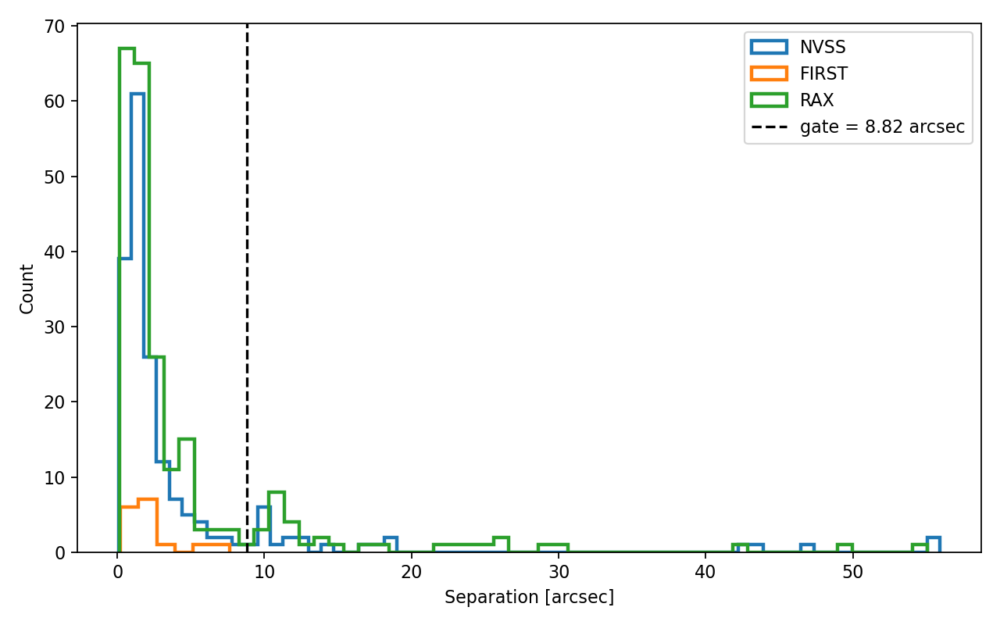

Mosaic Astrometry Verified
2026-01-25T2200 hourly-epoch mosaic · DSA-110
Catalog-seeded cross-check vs NVSS · FIRST · RACS
Overall verdict: PASS
What we tested
- Product: 2026-01-25T2200_mosaic.fits
- Method: catalog-seeded local peak near known sources (≥50 mJy)
- Truth catalogs: NVSS, FIRST, RACS/RAX (queried separately)
- Gate: seeded RMS ≤ √(BMAJ×BMIN)/5 ≈ 8.82″
- Beam on this mosaic: 58.8″ × 33.1″ · pixel scale 6″
- Master catalog not used (VLASS-only build; Phase-2 follow-up)
Results — all scored surveys PASS
| Survey | N assoc. | Median Δ | RMS Δ | Mean offset | Verdict |
|---|
| NVSS | 176 | 1.56″ | 4.69″ | 0.59″ | PASS |
| FIRST | 16 | 2.22″ | 2.98″ | 1.16″ | PASS |
| RACS | 215 | 1.86″ | 4.58″ | 0.39″ | PASS |
- Threshold was 8.82″ — RMS is well below for all three
- No systematic shift warning (mean RA/Dec offsets ≲ 1″)
- Associations restricted to ≤ beam/2 (~22″) to reject false peaks
Bright-source cutouts (NVSS)
20 brightest NVSS sources · cyan + = NVSS catalog · orange × = DSA peak · lime = beam

What the cutouts show
- Catalog positions land on the compact emission peaks
- Typical bright-source offsets are ≲ few arcsec (≪ beam)
- Brightest source (~12.7 Jy) at Δ ≈ 2.3″
- One 664 mJy field shows Δ ≈ 18″ — still inside the association radius; likely confusion / extended structure
Offset scatter (ΔRA vs ΔDec)
Per-survey residuals cluster near the origin

Separation histogram
Dashed line = PASS gate (8.82″)

Sky quiver map
Offset vectors for bright associated sources — no large-scale warp visible

Conclusion
- Astrometry is verified for this hourly-epoch mosaic
- Independent agreement across NVSS / FIRST / RACS
- RMS ~3–5″ vs gate 8.82″; medians ~1.5–2.2″
- Visual confirmation on the 20 brightest NVSS sources
- Follow-ups: rebuild master catalog fluxes/flags; optional blind Aegean path
Astrometry: PASS
2026-01-25T2200 · DSA-110 continuum
Artifacts: outputs/astrometry-2026-01-25/
Script: scripts/validate_mosaic_astrometry.py